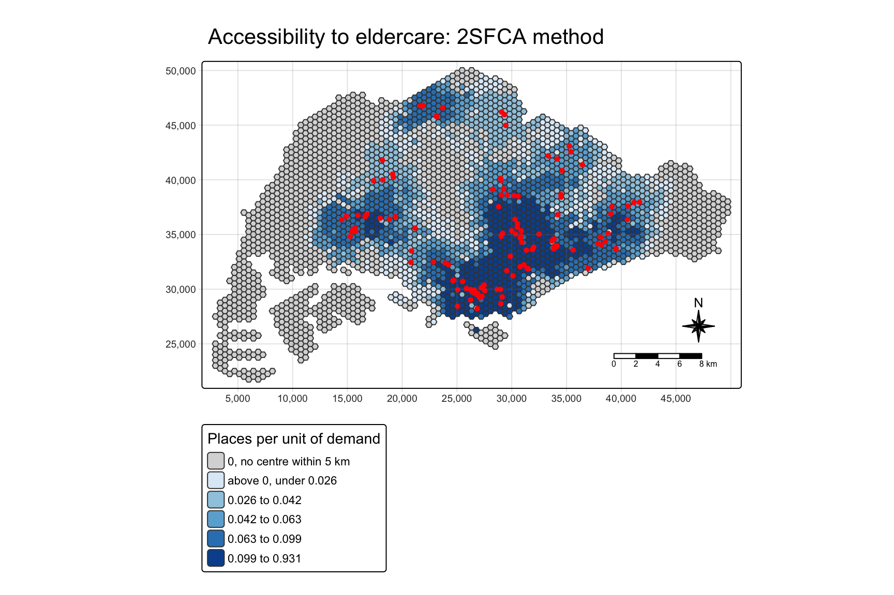
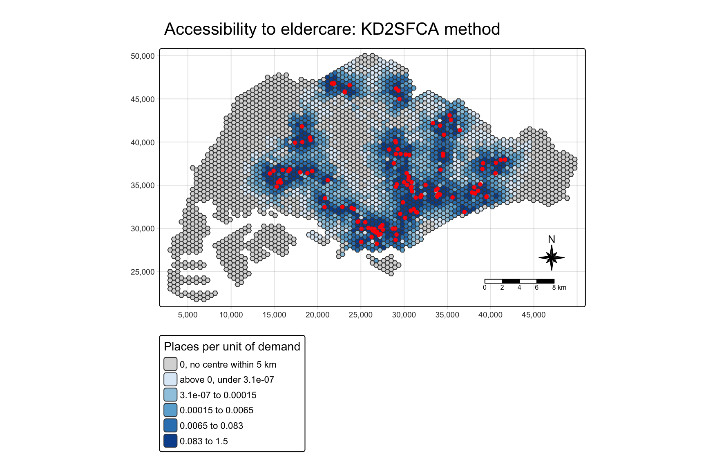

remotes::install_github("uva-bi-sdad/catchment")Floating Catchment Accessibility with catchment
IN-CLASS EXERCISE 7
R catchment Floating catchment Eldercare
pacman::p_load(sf, tidyverse, tmap, catchment)1. Importing the geospatial data
mpsz <- st_read(dsn = "data/geospatial", layer = "MP14_SUBZONE_NO_SEA_PL")Reading layer `MP14_SUBZONE_NO_SEA_PL' from data source
`/Users/jedidiahasaf/Downloads/Projects/isss626-coursework/In-class_Ex/In-class_Ex07/data/geospatial'
using driver `ESRI Shapefile'
Simple feature collection with 323 features and 15 fields
Geometry type: MULTIPOLYGON
Dimension: XY
Bounding box: xmin: 2667.538 ymin: 15748.72 xmax: 56396.44 ymax: 50256.33
Projected CRS: SVY21hexagons <- st_read(dsn = "data/geospatial", layer = "hexagons")Reading layer `hexagons' from data source
`/Users/jedidiahasaf/Downloads/Projects/isss626-coursework/In-class_Ex/In-class_Ex07/data/geospatial'
using driver `ESRI Shapefile'
Simple feature collection with 3125 features and 6 fields
Geometry type: POLYGON
Dimension: XY
Bounding box: xmin: 2667.538 ymin: 21506.33 xmax: 50010.26 ymax: 50256.33
Projected CRS: SVY21 / Singapore TMeldercare <- st_read(dsn = "data/geospatial", layer = "ELDERCARE")Reading layer `ELDERCARE' from data source
`/Users/jedidiahasaf/Downloads/Projects/isss626-coursework/In-class_Ex/In-class_Ex07/data/geospatial'
using driver `ESRI Shapefile'
Simple feature collection with 120 features and 19 fields
Geometry type: POINT
Dimension: XY
Bounding box: xmin: 14481.92 ymin: 28218.43 xmax: 41665.14 ymax: 46804.9
Projected CRS: SVY21 / Singapore TM2. Updating the CRS
mpsz <- st_transform(mpsz, 3414)
eldercare <- st_transform(eldercare, 3414)
hexagons <- st_transform(hexagons, 3414)
c(mpsz = st_crs(mpsz)$epsg,
hexagons = st_crs(hexagons)$epsg,
eldercare = st_crs(eldercare)$epsg) mpsz hexagons eldercare
3414 3414 3414 3. Cleaning the attribute fields
eldercare <- eldercare %>%
select(fid, ADDRESSPOS) %>%
mutate(capacity = 100)
hexagons <- hexagons %>%
select(fid) %>%
mutate(demand = 100)4. Importing and checking the distance matrix
ODMatrix <- read_csv("data/aspatial/OD_Matrix.csv", skip = 0)od_check <- ODMatrix %>%
group_by(origin_id) %>%
summarise(spread_m = max(total_cost) - min(total_cost),
nearest_m = min(total_cost))
c(origins = nrow(od_check),
same_distance_to_every_centre = sum(od_check$spread_m == 0)) origins same_distance_to_every_centre
3125 159 5. Tidying the distance matrix
distmat <- ODMatrix %>%
select(origin_id, destination_id, total_cost) %>%
pivot_wider(names_from = destination_id,
values_from = total_cost)
c(rows_match_hexagons = identical(distmat$origin_id,
as.numeric(hexagons$fid)),
cols_match_eldercare = identical(as.numeric(names(distmat)[-1]),
as.numeric(eldercare$fid))) rows_match_hexagons cols_match_eldercare
TRUE TRUE distmat <- distmat %>%
select(-origin_id)
distmat_km <- as.matrix(distmat / 1000)6. Two-step Floating Catchment Area (2SFCA)
df_2sfca <- catchment_ratio(
consumers = hexagons$demand,
providers = eldercare$capacity,
cost = distmat_km,
max_cost = 5) %>%
as.data.frame() %>%
rename("2sfca" = ".")summary(df_2sfca) 2sfca
Min. :0.00000
1st Qu.:0.00000
Median :0.02073
Mean :0.03840
3rd Qu.:0.06007
Max. :0.93136 df_2sfca %>%
mutate(fid = hexagons$fid,
centres_within_5km = rowSums(distmat_km < 5)) %>%
arrange(desc(`2sfca`)) %>%
head(3) 2sfca fid centres_within_5km
1 0.9313638 1067 120
2 0.2254351 2348 30
3 0.2251222 2282 297. Mapping the 2SFCA Result
hexagon_2sfca <- bind_cols(hexagons, df_2sfca)
mapex <- st_bbox(hexagons)nonzero <- hexagon_2sfca$`2sfca`[hexagon_2sfca$`2sfca` > 0]
q <- quantile(nonzero, probs = seq(0.2, 1, 0.2))
breaks_2sfca <- c(0, 1e-9, q)
labels_2sfca <- c("0, no centre within 5 km",
sprintf("above 0, under %.3f", q[1]),
sprintf("%.3f to %.3f", q[1:4], q[2:5]))
labels_2sfca[1] "0, no centre within 5 km" "above 0, under 0.026"
[3] "0.026 to 0.042" "0.042 to 0.063"
[5] "0.063 to 0.099" "0.099 to 0.931" tm_shape(hexagon_2sfca,
bbox = mapex) +
tm_polygons(fill = "2sfca",
fill.scale = tm_scale_intervals(
breaks = breaks_2sfca,
labels = labels_2sfca,
values = c("grey85", "#deebf7", "#9ecae1",
"#6baed6", "#3182bd", "#08519c")),
fill.legend = tm_legend(
title = "Places per unit of demand")) +
tm_shape(eldercare) +
tm_dots(size = 0.3,
fill = "red",
col = "black") +
tm_title("Accessibility to eldercare: 2SFCA method") +
tm_layout(frame = TRUE) +
tm_compass(type = "8star", size = 2) +
tm_scalebar() +
tm_grid(alpha = 0.2)
8. Enhanced Two-step Floating Catchment Area (E2SFCA)
step_weights <- list(c(5, .01), c(4, .05), c(3, .1), c(2, .4), c(1, 1))df_e2sfca <- catchment_ratio(
consumers = hexagons$demand,
providers = eldercare$capacity,
cost = distmat_km,
weight = step_weights) %>%
as.data.frame() %>%
rename("e2sfca" = ".")summary(df_e2sfca) e2sfca
Min. :0.000000
1st Qu.:0.000000
Median :0.003798
Mean :0.038400
3rd Qu.:0.042698
Max. :0.744475 tibble(fid = hexagons$fid,
`2sfca` = df_2sfca$`2sfca`,
e2sfca = df_e2sfca$e2sfca,
centres_within_1km = rowSums(distmat_km <= 1)) %>%
mutate(rank_2sfca = min_rank(desc(`2sfca`)),
rank_e2sfca = min_rank(desc(e2sfca))) %>%
arrange(rank_e2sfca) %>%
head(5)# A tibble: 5 x 6
fid `2sfca` e2sfca centres_within_1km rank_2sfca rank_e2sfca
<dbl> <dbl> <dbl> <dbl> <int> <int>
1 1816 0.198 0.744 5 39 1
2 1769 0.193 0.681 3 51 2
3 1862 0.207 0.573 2 23 3
4 1864 0.190 0.571 3 61 4
5 1722 0.200 0.560 2 37 59. Mapping the E2SFCA Result
hexagon_e2sfca <- bind_cols(hexagons, df_e2sfca)
nonzero_e2 <- hexagon_e2sfca$e2sfca[hexagon_e2sfca$e2sfca > 0]
q_e2 <- quantile(nonzero_e2, probs = seq(0.2, 1, 0.2))
breaks_e2sfca <- c(0, 1e-9, q_e2)
labels_e2sfca <- c("0, no centre within 5 km",
sprintf("above 0, under %.3f", q_e2[1]),
sprintf("%.3f to %.3f", q_e2[1:4], q_e2[2:5]))tm_shape(hexagon_e2sfca,
bbox = mapex) +
tm_polygons(fill = "e2sfca",
fill.scale = tm_scale_intervals(
breaks = breaks_e2sfca,
labels = labels_e2sfca,
values = c("grey85", "#deebf7", "#9ecae1",
"#6baed6", "#3182bd", "#08519c")),
fill.legend = tm_legend(
title = "Places per unit of demand")) +
tm_shape(eldercare) +
tm_dots(size = 0.3,
fill = "red",
col = "black") +
tm_title("Accessibility to eldercare: E2SFCA method") +
tm_layout(frame = TRUE) +
tm_compass(type = "8star", size = 2) +
tm_scalebar() +
tm_grid(alpha = 0.2)10. Kernel Density Two-step Floating Catchment Area (KD2SFCA)
df_kd2sfca <- catchment_ratio(
consumers = hexagons$demand,
providers = eldercare$capacity,
cost = distmat_km,
weight = "gaussian",
scale = 1 / sqrt(2),
max_cost = 5) %>%
as.data.frame() %>%
rename("kd2sfca" = ".")kd_spatialacc <- SpatialAcc::ac(hexagons$demand,
eldercare$capacity,
distmat_km,
d0 = 5,
power = 2,
family = "KD2SFCA")
c(max_abs_difference = max(abs(df_kd2sfca$kd2sfca - kd_spatialacc)))max_abs_difference
4.440892e-16 summary(df_kd2sfca) kd2sfca
Min. :0.000e+00
1st Qu.:0.000e+00
Median :3.000e-08
Mean :3.840e-02
3rd Qu.:4.616e-03
Max. :1.476e+00 d <- c(0.5, 1, 2, 3, 4, 5)
tibble(distance_km = d,
`2SFCA` = 1,
E2SFCA = c(1, 1, 0.4, 0.1, 0.05, 0.01),
KD2SFCA = signif(exp(-d^2), 3))# A tibble: 6 x 4
distance_km `2SFCA` E2SFCA KD2SFCA
<dbl> <dbl> <dbl> <dbl>
1 0.5 1 1 7.79e- 1
2 1 1 1 3.68e- 1
3 2 1 0.4 1.83e- 2
4 3 1 0.1 1.23e- 4
5 4 1 0.05 1.13e- 7
6 5 1 0.01 1.39e-1111. Mapping the KD2SFCA Result
hexagon_kd2sfca <- bind_cols(hexagons, df_kd2sfca)
nonzero_kd <- hexagon_kd2sfca$kd2sfca[hexagon_kd2sfca$kd2sfca > 0]
q_kd <- quantile(nonzero_kd, probs = seq(0.2, 1, 0.2))
# the zero class ends below the smallest real score, however small it is
breaks_kd2sfca <- c(0, min(nonzero_kd) / 2, q_kd)
labels_kd2sfca <- c("0, no centre within 5 km",
sprintf("above 0, under %.2g", q_kd[1]),
sprintf("%.2g to %.2g", q_kd[1:4], q_kd[2:5]))tm_shape(hexagon_kd2sfca,
bbox = mapex) +
tm_polygons(fill = "kd2sfca",
fill.scale = tm_scale_intervals(
breaks = breaks_kd2sfca,
labels = labels_kd2sfca,
values = c("grey85", "#deebf7", "#9ecae1",
"#6baed6", "#3182bd", "#08519c")),
fill.legend = tm_legend(
title = "Places per unit of demand")) +
tm_shape(eldercare) +
tm_dots(size = 0.3,
fill = "red",
col = "black") +
tm_title("Accessibility to eldercare: KD2SFCA method") +
tm_layout(frame = TRUE) +
tm_compass(type = "8star", size = 2) +
tm_scalebar() +
tm_grid(alpha = 0.2)
12. Three-step Floating Catchment Area (3SFCA)
df_3sfca <- catchment_ratio(
consumers = hexagons$demand,
providers = eldercare$capacity,
cost = distmat_km,
step_weights,
normalize_weight = TRUE) %>%
as.data.frame() %>%
rename("3SFCA" = ".")summary(df_3sfca) 3SFCA
Min. :0.000000
1st Qu.:0.000000
Median :0.005286
Mean :0.038400
3rd Qu.:0.035281
Max. :0.818821 13. Mapping the 3SFCA Result
hexagon_3sfca <- bind_cols(hexagons, df_3sfca)
nonzero_3 <- hexagon_3sfca$`3SFCA`[hexagon_3sfca$`3SFCA` > 0]
q_3 <- quantile(nonzero_3, probs = seq(0.2, 1, 0.2))
breaks_3sfca <- c(0, min(nonzero_3) / 2, q_3)
labels_3sfca <- c("0, no centre within 5 km",
sprintf("above 0, under %.2g", q_3[1]),
sprintf("%.2g to %.2g", q_3[1:4], q_3[2:5]))tm_shape(hexagon_3sfca,
bbox = mapex) +
tm_polygons(fill = "3SFCA",
fill.scale = tm_scale_intervals(
breaks = breaks_3sfca,
labels = labels_3sfca,
values = c("grey85", "#deebf7", "#9ecae1",
"#6baed6", "#3182bd", "#08519c")),
fill.legend = tm_legend(
title = "Places per unit of demand")) +
tm_shape(eldercare) +
tm_dots(size = 0.3,
fill = "red",
col = "black") +
tm_title("Accessibility to eldercare: 3SFCA method") +
tm_layout(frame = TRUE) +
tm_compass(type = "8star", size = 2) +
tm_scalebar() +
tm_grid(alpha = 0.2)